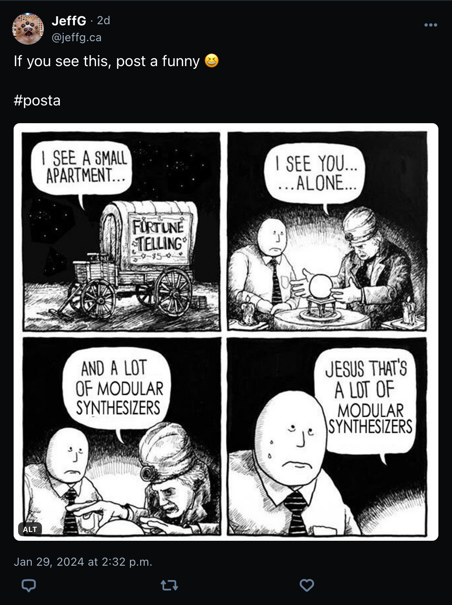

Posta!!
A feed of viral threads for Bluesky.
What is Posta?
'Posta' is a love letter to some of the emergent social customs on Bluesky, in particular in the for of 'if you see this, post a $something'. Here's an example:
 Link
Like any other atproto feed generator, Post gets a firehose of all feeds on Bluesky and produces a feed that people can subscribe to. Posta will currently only select posts that follow a specific convention:
- If the post starts with the text 'if you see this, post a ' ( regardless of capitalization )
- If the post includes the hashtag '#posta'
HowTo
TBD: still need to figure out how to publish the feed / why it hasn't been published yet, etc.
FAQ
Q: Why did you do this?
A: I'm a fairly early but shy user of Bluesky, but I love some of the unique social conventions that have been invented on the platform so far, or imported from other platforms ( you know the ones ). The first time I participated in a thread of this specific type, I immediately wished there was a better way to discover more of these. So I made this!
( more FAQs as events warrant )